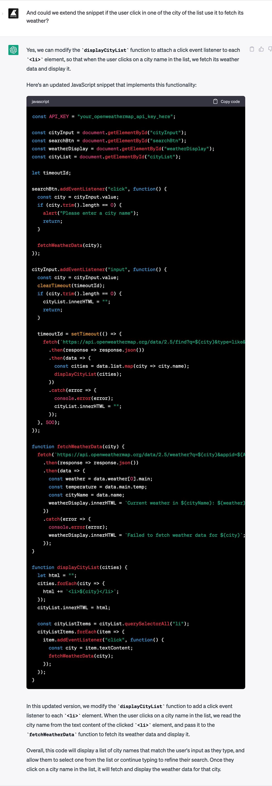

Como construir uma PWA com o ChatGPT antes que ele nos mande para o desemprego.
Publicado oA primeira IA que usei (conscientemente) foi a Midjourney: escrever um prompt, pressionar enter, esperar um instante e a imagem surgia do nada. Linda, sofisticada e estranha. Foi como presenciar um ato mágico.
Depois experimentei o Dall·E e o Stable Diffusion, igualmente espetaculares, mas no final o tédio venceu a magia. Não achei utilidade para mim, prefiro gerar imagens do meu jeito.
Os meses passaram e deixou-se de falar tanto sobre elas, havia novo brinquedo, o ChatGPT.
Demorei para usá-lo, mas a semana passada copiei um snippet de JavaScript de um site antigo, colei-o na caixa do chat e perguntei: "Could you optimize this code snippet?" E o texto foi crescendo enquanto dizia, claro, você pode melhorar isso com aquilo, e aquilo com isso, etc. Deixo um exemplo para você. O exemplo fazia sentido e funcionava. Novamente um ato aparentemente mágico. Novamente a emoção. Mas agora também uma sensação diferente, um pouco de medo.

Só um pouquinho. A verdade é que não acredito em magia (exceto na de Tamariz), já vi gastar o adjetivo disruptivo na primeira década do século e como a melhor maneira de perder o medo de algo é conhecê-lo, pus-me mãos à obra, antes de ele nos enviar direitinhas ao desemprego.
Experimento
Hmm… Por onde começar? Bom, a Naia e mais eu temos a ideia de criar uma app meteorológica na que, em troca dos clássicos ícones, mostrar uns desenhos um pouco mais divertidos. Assim que aproveitando a desculpa, escrevi a seguinte pergunta:

Óptimo. Na sua primeira resposta o ChatGPT forneceu um HTML, um snippet de JS e uma explicação detalhada de todo o código.
Sustitui o your_openweathermap_api_key_here por uma key válida da API OpenWeatherMap e funcionou. A única chata salientável seria a temperatura da cidade, pois indicava que estava em graus Celsius, mas na realidade o valor estava em Kelvin.
Depois de alguma prova mais, observei que se o nome cidade não existia na base de dados da API, Portox por exemplo, obtinha um erro no fetch (com a mensagem que passávamos no código, "Failed to fetch weather data for Portox"). Também ocorria que se várias cidades compartilhavam o mesmo nome, como Porto, que há em Portugal, Brasil e Espanha, os dados que víamos pertenciam apenas a uma delas. Polo que escrevi uma segunda pegunta:

Desta vez o ChatGPT não acertou. Ou melhor, acertou mas eu não forneci o contexto correto. Ele simplesmente verificava se a cidade existia na base de dados antes de buscar as informações meteorológicas. No entanto, para o usuário não havia diferença em relação à versão anterior, exceto pela troca de mensagens. Além disso, o problema das cidades com o mesmo nome não era resolvido.
Mea culpa e nova pergunta. Agora focada nas cidades de mesmo nome:

Com o código novo conseguia exibir a lista das cidades, mas não era possível clicar nelas, obtendo como resultado os dados de apenas uma ao pressionarmos o botão "Search".
Mais outra pergunta:
Com a troca sim era possível clicar numa das cidades da lista e, ao fazê-lo, obtiamos os seus dados meteorológicos.
Mas ainda restavam alguns pontos por polir:
- O botão "Search" realmente não servia para nada.
- A lista deveria desaparecer ao clicarmos numa das opções.
- Havia que passar a temperatura a Celsius.
- Estaria bem indicar o nome do país à direita de cada cidade.
Foi neste ponto que decidi deixar o piloto automâtico e passar a "modo manual", pois achei mais rápido modificar eu o código que continuar a perguntar. Muito obrigado ChatGPT!

Eis o resultado final com as "modifciações humanas":
Conclusões
A primeira conclusão √© que o ChatGPT √© capaz de compreender muito bem at√© mesmo um ingl√™s ruim como o meu üò¨
A segunda é que ele pode ser útil para:
- Escrever um código base, ajudando-nos a poupar tempo. Depois de analisar o meu experimento, devo constatar que a melhor estratégia é escrever um prompt o mais amplo e contextualizado possível, em vez de formular muitas perguntas curtas.
- Fazer melhorias/trocas no código. Até certo ponto, depois é melhor passarmos ao modo manual/humano.
- Realizar consultas a uma API que não conhecemos sem necessidade de visitar sua documentação.
- Optimizar o código.
- Ampliar o conhecimento sobre uma linguagem, conhecendo outras abordagens.
- Iniciar-se em novas linguagens/tecnologias.
Por fim, a última e mais importante, é que ele não vai mandar as programadoras diretinhas para o desemprego, pelo menos nos próximos meses.